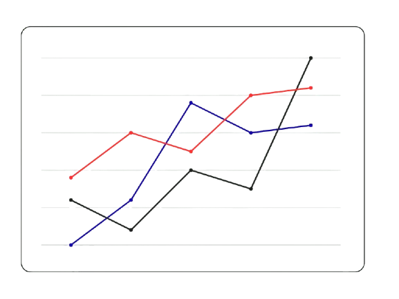

Objetivo
Analisar os impactos econômicos e financeiros da Reforma Tributária sobre o Consumo no fluxo de caixa operacional das empresas, com foco no longo do período de transição (2026–2033), considerando diferentes perfis de faturamento, estruturas de custos e cenários de alíquotas.
Contribuição Prática para Sociedade
Facilitar a compreensão e a tomada de decisão dos usuários da informação contábil sobre a gestão de caixa em um contexto de transição normativa.
Breve Resumo Sobre as Etapas da Reforma



Simulação de Impactos da Reforma Tributária Sobre o Consumo (2026 – 2033)
Dados Anuais
Alíquotas Estimadas
| Ano | ICMS / ISS Líquido (R$) | PIS/COFINS Líquido (R$) |
IBS Líquido (R$) |
CBS Líquido (R$) |
Tributos Totais (R$) | Fluxo de Caixa Operacional (R$) |
|---|